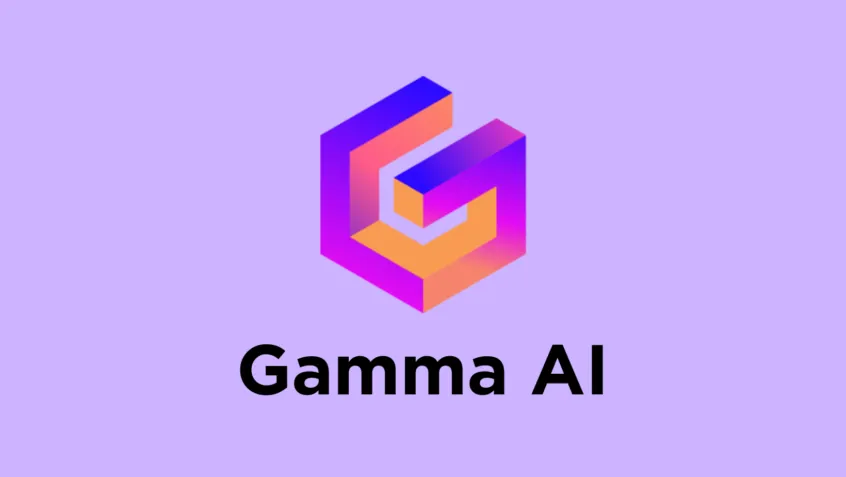
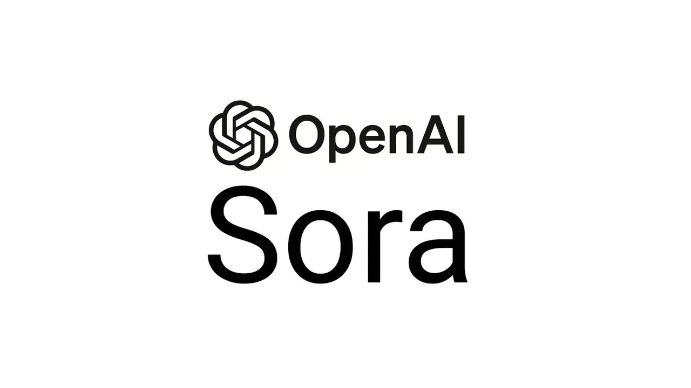
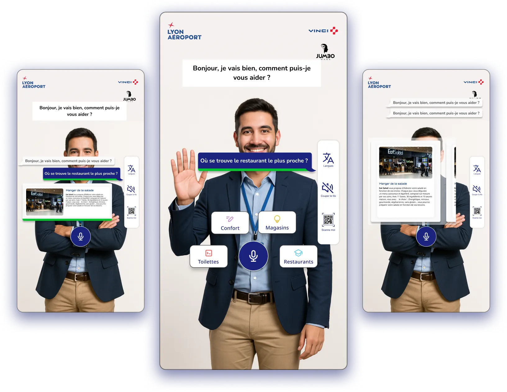
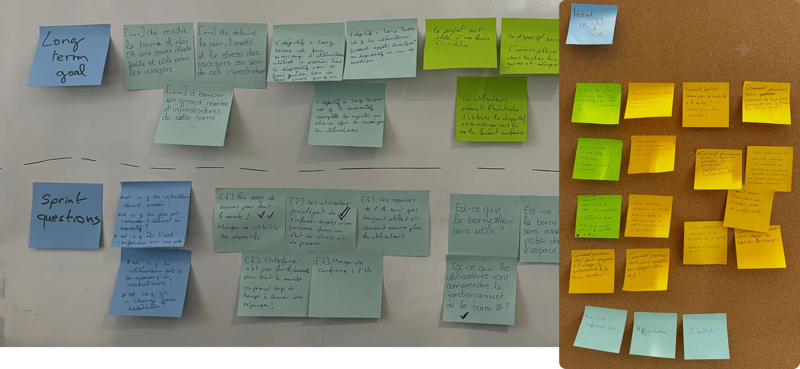
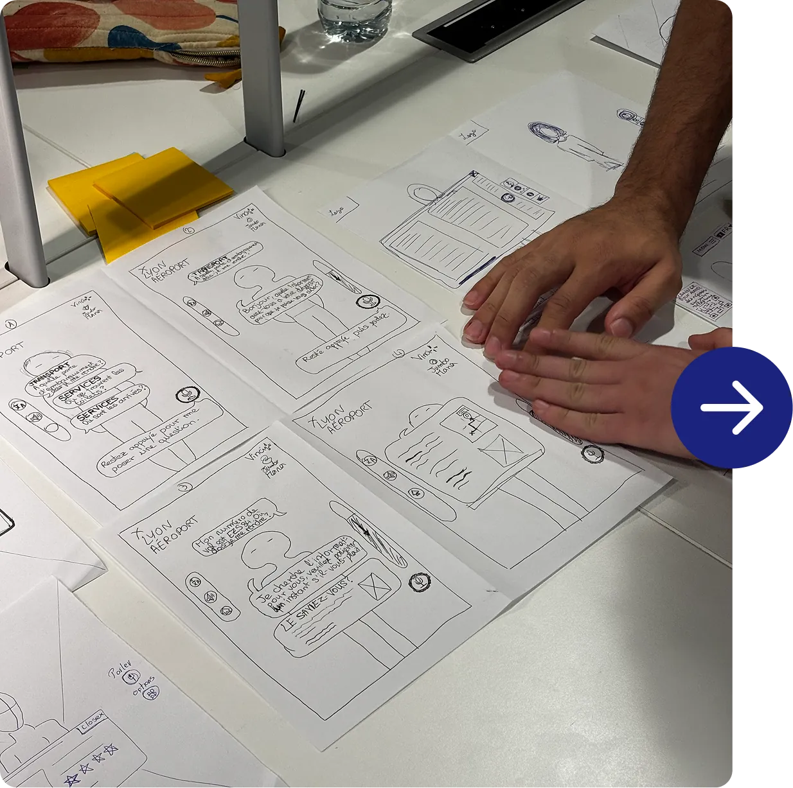
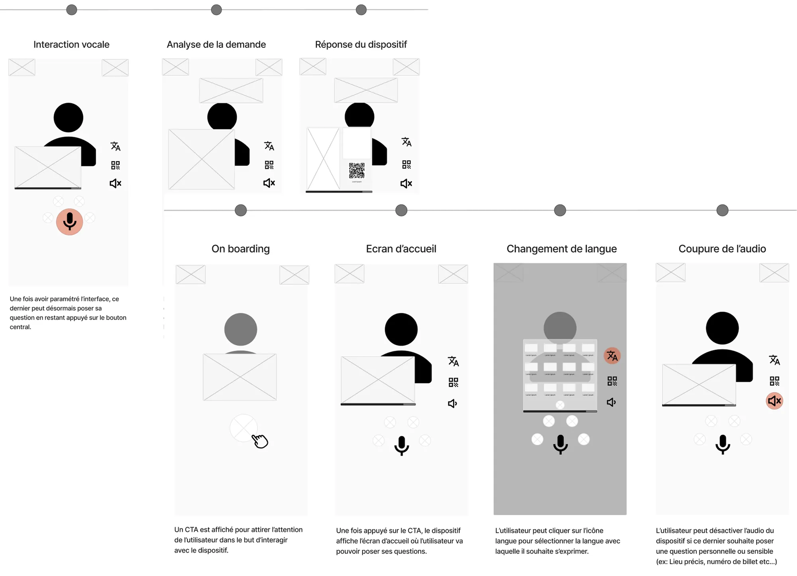
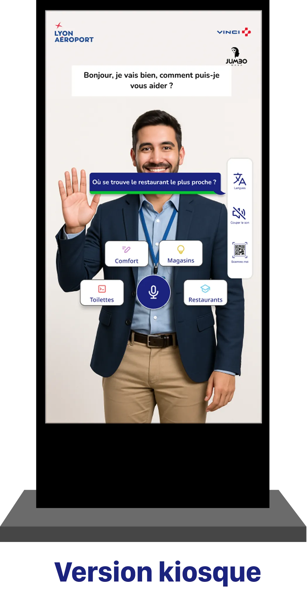
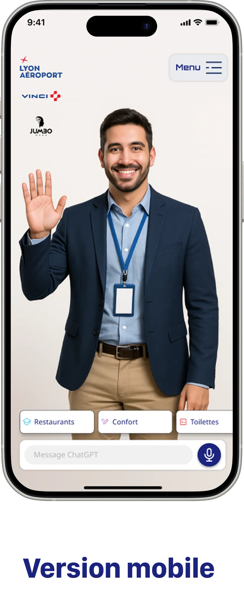
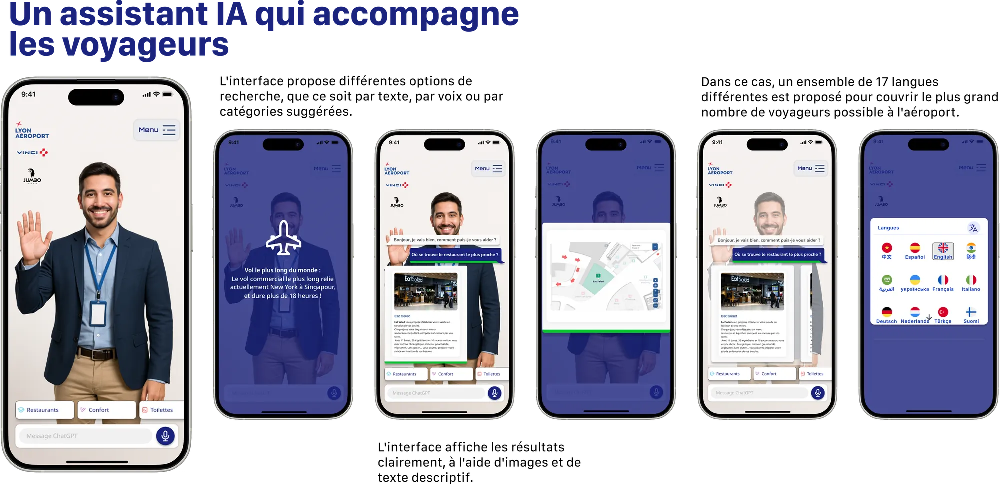
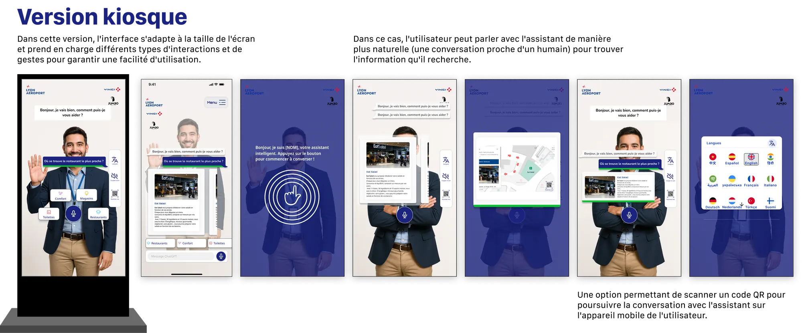

UX Designer · 2024
JumboMana
Assistant IA · Aéroport Lyon-Saint-Exupéry
Le défi était de concevoir une expérience claire et engageante, capable de capter l'attention dans un environnement aussi fréquenté sans être confondue avec de la publicité. L'interface devait faciliter une compréhension rapide des fonctionnalités, garantir une utilisation fluide et compléter efficacement les systèmes d'information existants à l'aéroport.
- Offrir un service intuitif et accessible capable de servir des millions de voyageurs ayant des besoins et des langues différents.
- Réduire la résistance des utilisateurs grâce à un avatar convivial et à une interaction naturelle (toucher ou vocale).
- Améliorer l'orientation à l'aide de cartes interactives, de codes QR et de réponses précises et contextuelles.



Défi de conception
Dans quelle mesure la mise en œuvre du système compléterait-elle efficacement les services d'information traditionnels de l'aéroport, sans provoquer de confusion ni de résistance chez les usagers, tout en restant identifiable, compréhensible et accessible ?
Qui ?
Visiteurs, voyageurs, compagnons — en recherche d'informations, d'orientation ou d'assistance.
Quand ?
Lors d'un voyage à l'aéroport, en cas de besoin d'orientation ou d'information en temps réel.
Où ?
Aéroport Lyon-Saint-Exupéry — zones de transit, halls d'arrivée et départ, services.
Quoi ?
Assistant IA conversationnel multiformat — kiosque tactile et application mobile.
Réflexion sur notre démarche
Nous avons structuré notre processus de conception à l'aide d'un outil collaboratif permettant de cartographier les insights utilisateurs, de prioriser les fonctionnalités clés et de valider les hypothèses de conception. Cette approche a facilité l'alignement de l'équipe et la prise de décisions éclairées à chaque étape du projet.

Phase d'idéation
Le projet comprenait deux versions d'interface : une pour les appareils mobiles et une autre conçue pour les grands écrans tactiles. Le storyboard nous a aidé à déterminer comment les utilisateurs navigueraient dans chaque version, en mettant l'accent sur les moments clés d'interaction, d'accessibilité et de cohérence du flux.


Tests utilisateur
Lors des tests, les participants ont interagi avec succès avec les fonctionnalités clés : couper le son, changer de langue, rechercher un restaurant et localiser l'itinéraire menant au restaurant sélectionné.


Commentaires des utilisateurs
Ces résultats indiquent que l'interface était généralement intuitive et aidait les utilisateurs à atteindre leurs objectifs avec un minimum de frictions.
Certains utilisateurs ont réussi à changer la langue.
Certains utilisateurs ont pu couper le son.
Certains utilisateurs ont réussi à rechercher un restaurant.
Certains utilisateurs ont terminé la tâche en trouvant l'itinéraire.

